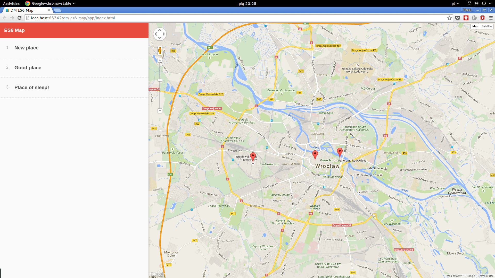

4a. Display the list of markers.
Use array or Set class to store models.

4b. Change Set/Array of places to own collection class.
Use Symbol.iterator to be compatible with other collections and
to enable iterating over the markers.
4c. Add marker edit functionality to the map extra
Marker edit can affect coordinates (use drag) or name. Changing the marker should reflect markers
on the list.

4d. Use events for communication between map and list. extra
You need an object which will hold a list of handler and which will dispatch an event.
4e. Add remove marker functionality to the list. Removing marker on the list
should remove marker on the map.extra